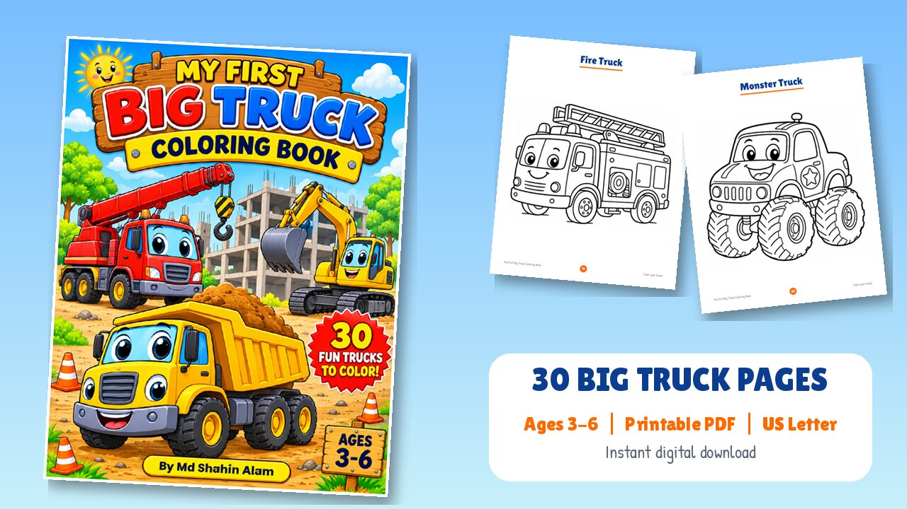
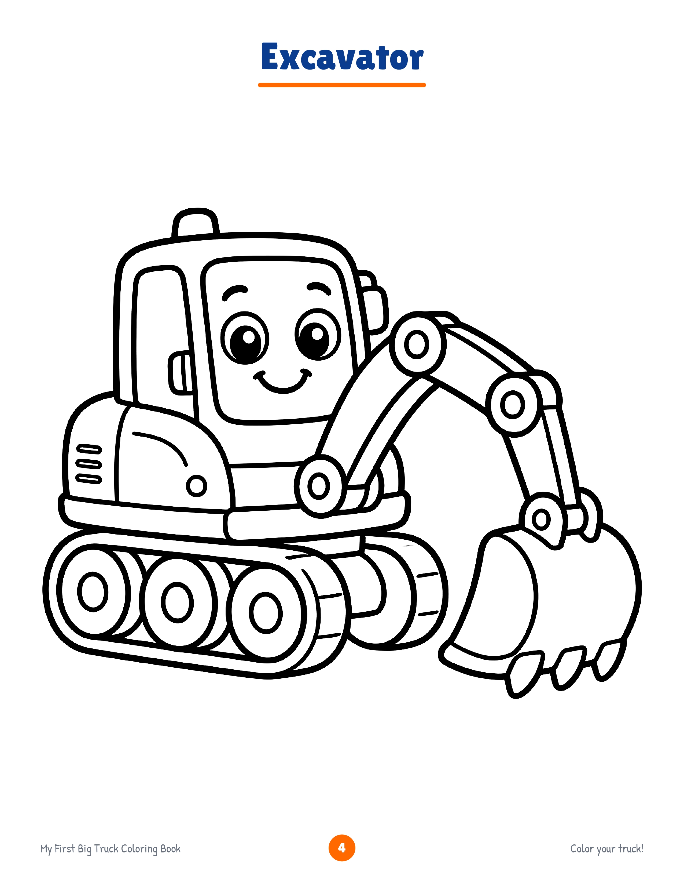
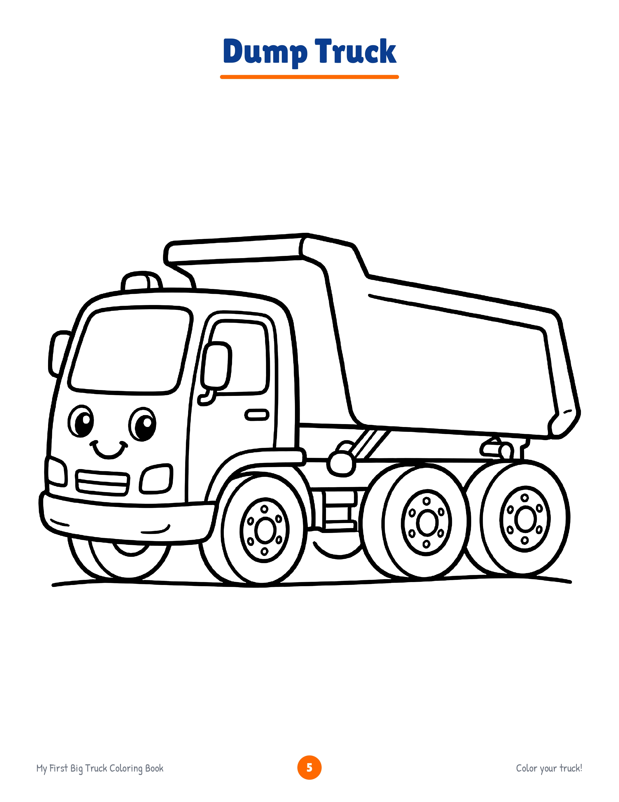
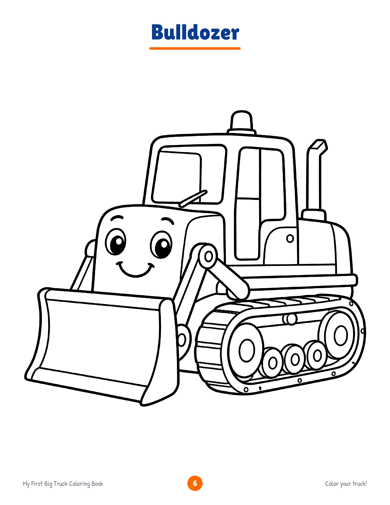
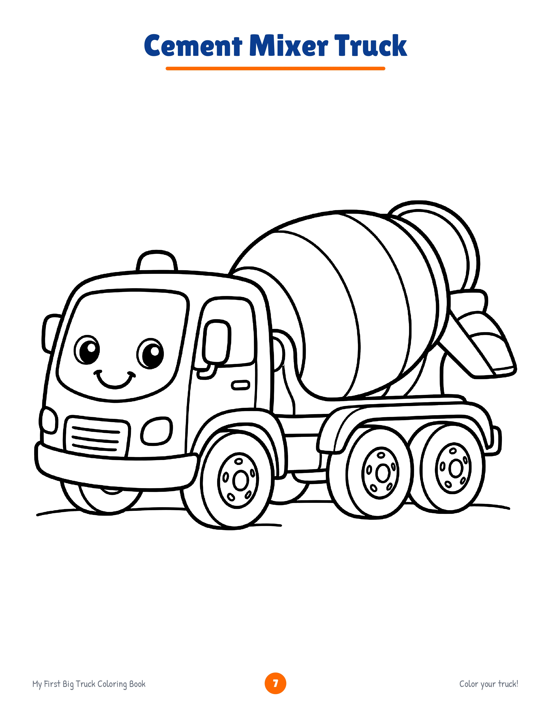
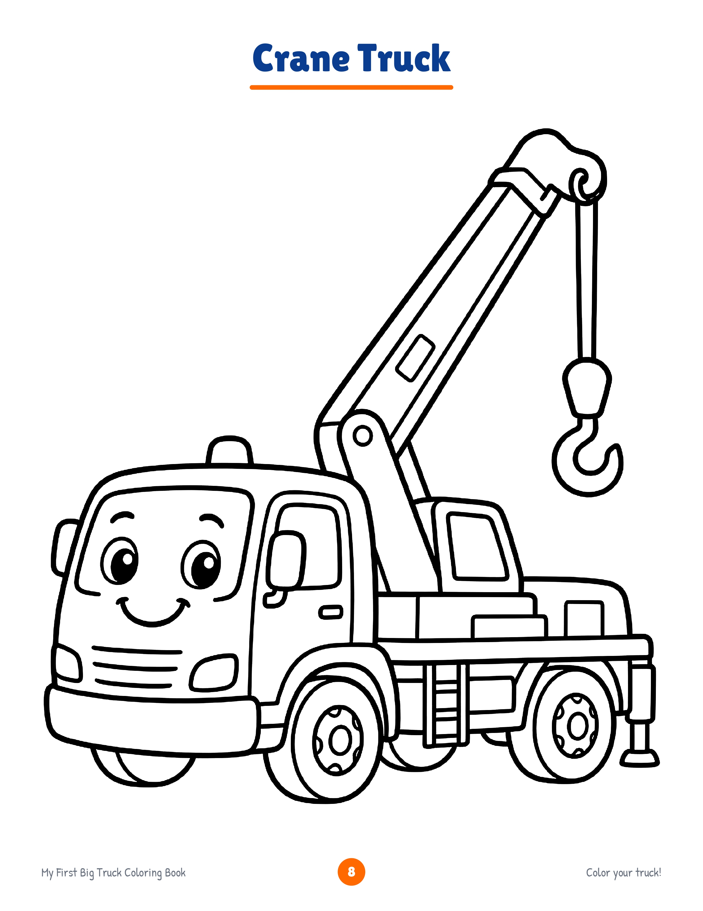
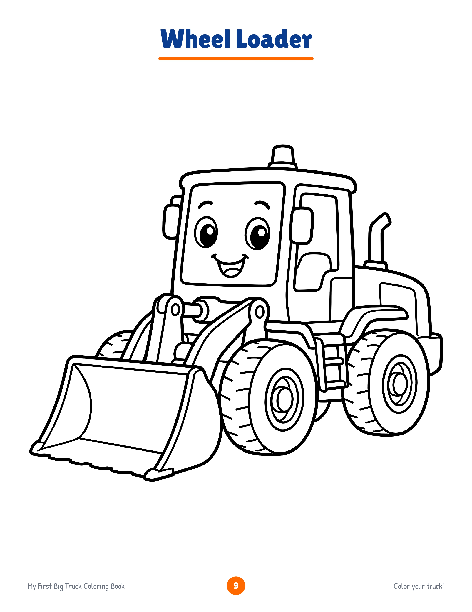

Home / Books / My First Big Truck Coloring Book

My First Big Truck Coloring Book
30 friendly cartoon trucks for little hands to color. Download the PDF, print at home, and start coloring in minutes.
- 30 coloring pages, ages 3-6
- Printable PDF, US Letter size (A4: Fit to Page)
- Instant download from Gumroad
- Personal and classroom use
Made for first-time colorists
Bold, clear outlines and big shapes help young children finish a page with pride.
Thick, simple lines
Easy for small hands, crayons and chunky markers.
One truck per page
Plenty of space and no busy backgrounds for beginners.
Print as often as you like
Reprint any page for your own family or classroom.
30 trucks inside
Each page has a tick box so children can mark off the trucks they have finished.
- Excavator
- Dump Truck
- Bulldozer
- Cement Mixer Truck
- Crane Truck
- Wheel Loader
- Tow Truck
- Fire Truck
- Garbage Truck
- Flatbed Truck
- Snow Plow Truck
- Water Tanker Truck
- Road Roller
- Tower Crane
- Backhoe Loader
- Skid Steer Loader
- Forklift
- Cherry Picker Truck
- Monster Truck
- Cargo Truck
- Delivery Truck
- Logging Truck
- Car Carrier Truck
- Heavy Haul Truck
- Digging Excavator
- Dump Truck at Work
- Tow Truck to the Rescue
- Building Construction
- Road Construction
- Happy Construction Team
Sample pages
A look at a few pages. The full 30-page PDF is on Gumroad.






How it works
No waiting for delivery.
- Buy and download the PDF from Gumroad.
- Print at 100% on US Letter. On A4, choose "Fit to Page".
- Print single-sided. Use thicker paper for markers.
- Color, tick the box, and enjoy!
Questions
What age is the book for?
Children aged 3-6. Bold lines and large areas make it easy to color.
Is this a physical book?
No. It is a digital PDF that you download and print yourself. Nothing is shipped.
What paper size does it use?
US Letter (8.5 x 11 in). On A4, choose "Fit to Page" in your print settings.
Can I print it more than once?
Yes, for your own children, family or classroom. See the license for details.
Where do I buy it?
The PDF is sold on Gumroad. Use the button at the top of this page.
Ready to color?
Get the PDF and start printing today.